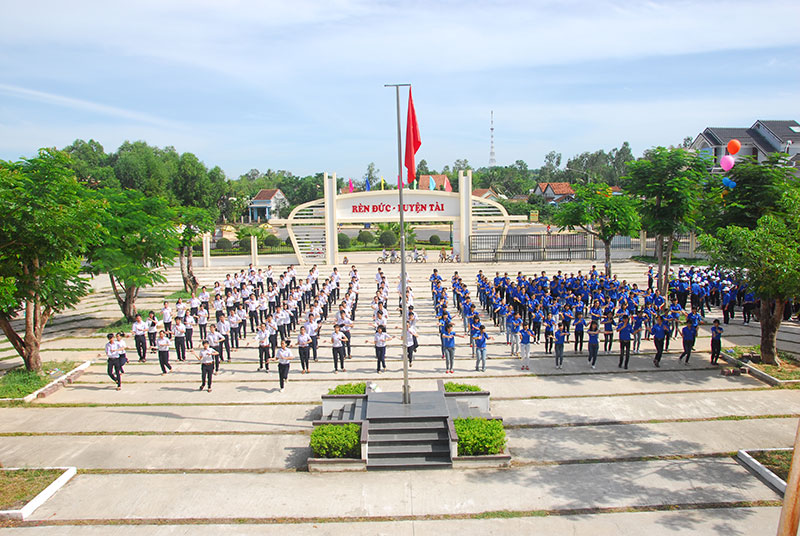

Kế hoạch tổ chức Tuần sinh hoạt tập thể đầu năm học 2019-2020

Lần cập nhật cuối lúc Thứ sáu, 06 Tháng 9 2019 16:43 Viết bởi Administrator Thứ tư, 21 Tháng 8 2019 16:34

Nhằm ổn định công tác học sinh, tiến hành các hoạt động giáo dục trong năm học mới, Trường THPT chuyên Nguyễn Bỉnh Khiêm tổ chức “Tuần sinh hoạt tập thể” đầu năm học 2019- 2020, và chuẩn bị khai giảng năm học mới cụ thể như sau:
I. Mục đích, yêu cầu
1. Mục đích
- Thông qua tuần sinh hoạt tập thể giúp học sinh làm quen với môi trường giáo dục mới (đối với học sinh đầu cấp), làm quen với thầy giáo, cô giáo, bạn bè, điều kiện học tập; xây dựng mối quan hệ giữa các khối, lớp trong nhà trường; tạo tình cảm, niềm tin của học sinh đối với trường, lớp, thầy cô và bạn bè trong môi trường học tập và rèn luyện.
- Giáo dục ý thức cho học sinh về truyền thống của nhà trường; tiếp cận với các điều kiện về cơ sở vật chất, điều lệ, qui chế, nội quy và các quy định khác liên quan của nhà trường; rèn luyện một số kỹ năng cần thiết khi bước vào năm học mới.
2. Yêu cầu
- Tổ chức các hoạt động trong “Tuần sinh hoạt tập thể” đầu năm học phải phù hợp với điều kiện nhà trường và đặc điểm tâm sinh lý, lứa tuổi học sinh, thực sự có tác dụng, hiệu quả đối với em, đặc biệt là học sinh các lớp đầu cấp học.
- Các hoạt động trong “Tuần sinh hoạt tập thể” đầu năm học phải gắn với công tác học sinh, các hoạt động đầu năm học của nhà trường, với phong trào thi đua “xây dựng trường học thân thiện, học sinh tích cực” và các cuộc vận động, các phong trào thi đua khác của ngành, địa phương.
- Chú trọng giáo dục đạo đức, lối sống, ý thức chấp hành pháp luật cho học sinh ngày từ đầu năm học.
II. Nội dung
......
- 23/10/2019 16:23 - Thông báo kết quả xếp giải Kỳ thi HSG cấp tỉnh THP…
- 10/10/2019 08:39 - Hứa Nhật Minh đăng quang vô địch Học trò xứ Quảng …
- 01/10/2019 09:10 - Tuyên truyền luật an toàn giao thông cho học sinh …
- 06/09/2019 15:29 - Trường THPT chuyên Nguyễn Bỉnh Khiêm khai giảng nă…
- 06/09/2019 15:23 - Tuyên truyền pháp luật cho học sinh Trường THPT ch…
- 21/08/2019 09:23 - Thông báo thời gian và quy định đi nhận Học bổng V…
- 09/08/2019 08:46 - Triển khai Cuộc thi ý tưởng khởi nghiệp năm 2019
- 22/05/2019 07:25 - Thông báo Thể lệ trao thưởng Quỹ ươm mầm tài năng …
- 11/03/2019 16:39 - Tuyển sinh du học Nga năm 2019 - mùa vui, mùa hi v…
- 28/01/2019 13:51 - Tổ chức cuộc thi Thực hiện ước mơ Lần 7 năm học 20…